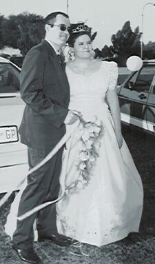
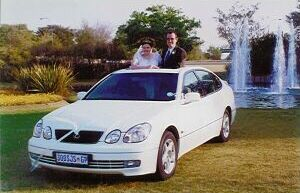
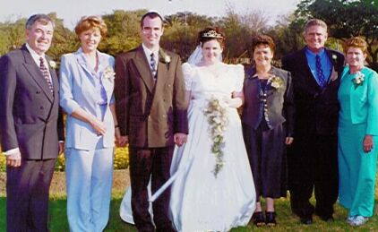
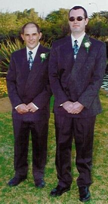
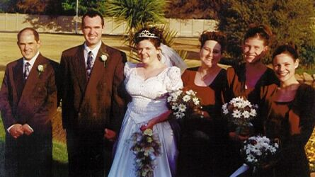
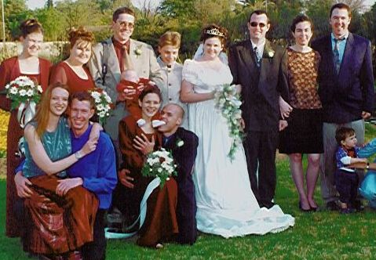

[Home] [Introduction] [Preperation] [Church] [Just Married] [Reception] [Honeymoon]


As you can see the car was really something.
We were so happy and I am glad to report that we still are.

My parents were so happy and I have two more parents to add to
my list.


We had really great friends and family to stand at our side

William is still a little overwhlemed at having gained so many brothers
and sisters. As you can see, I have a lot and I didn't mind the few extra. It
was and always will be a mad house.
I have to say that it was really tiring having to stand there for all the photo's, but I really enjoyed myself. I have to mention that I still hate having photo's taken
[Home] [Introduction] [Preperation] [Church] [Just Married] [Reception] [Honeymoon]